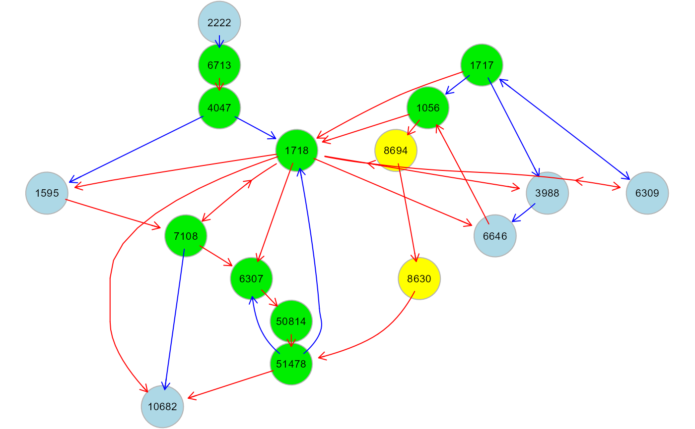
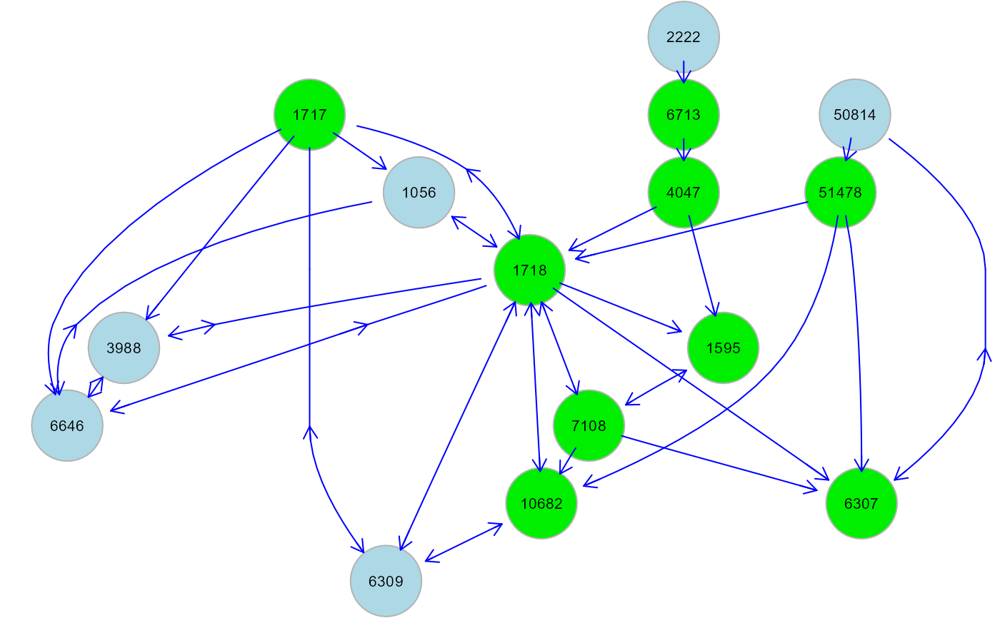
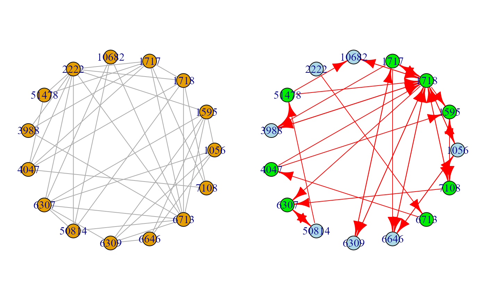

Extend an input directed graph, importing new interactions from a second graph. Added interactions will be chosen among those available in a given reference interactome.
extendGraph(g = list(), data, gnet, verbose = FALSE, ...)
| g | A list of two graphs as igraph objects. |
|---|---|
| data | A matrix with rows corresponding to subjects, and columns to graph nodes. |
| gnet | External interaction network as an igraph object. Interaction data from this network will be used to integrate additional interaction information inside the graph. |
| verbose | A logical value. If FALSE (default), the processed graphs will not be plotted to screen, saving execution time (they will be returned anyway). |
| ... | Currently ignored. |
A list of 2 objects:
"Ug", the extended graph (union of the input graph and guv);
"guv", the directed subgraph added to the input graph.
This function takes two input graphs: the first is the input
causal model (i.e., a directed graph), and the second can be either
a directed or undirected graph, providing a set of connections to be
checked against the reference network and imported to the first graph.
Typically, the second graph is the output of either
SEMdag or SEMbap.
In the former we use the new inferred causal structure stored in the
dag.red object. In the latter, we use the new inferred covariance
structure stored in the guu object. In both cases, new hidden
directed paths and new nodes (i.e., new mediators) can be revealed.
Palluzzi F, Grassi M (2021). SEMgraph: An R Package for Causal Network Analysis of High-Throughput Data with Structural Equation Models. <arXiv:2103.08332>
Mario Grassi mario.grassi@unipv.it
# \donttest{ # Extract from graphite the "Steroid biosynthesis" pathway: library(graphite) humanKegg <- pathways("hsapiens", "kegg") p <- humanKegg[["Steroid biosynthesis"]] g <- pathwayGraph(p) graph::nodes(g) <- gsub("ENTREZID:","",graph::nodes(g)) G <- properties(graph_from_graphnel(g))[[1]]#> Frequency distribution of graph components #> #> n.nodes n.graphs #> 1 3 1 #> 2 17 1 #> #> Percent of vertices in the giant component: 85 % #> #> is.simple is.dag is.directed is.weighted #> TRUE FALSE TRUE TRUE #> #> which.mutual.FALSE which.mutual.TRUE #> 17 36#> Conducting the nonparanormal (npn) transformation via shrunkun ECDF....done.#> #>#> DAG conversion: TRUE# Extend a graph using the inferred bow-free path diagram: bap <- SEMbap(graph = G, data = als.npn, gnet = kegg, d = 1, alpha = 0.05)#> #>#> DAG conversion: TRUE #> #> Degrees of freedom: #> Input graph = 77 #> Output graph = 77 #> #> d-separation test (minimal set) of 77 edges ... #> Number of significant local tests: 59 / 76 #># Create a graph from correlation matrix, using KEGG as reference: v <- which(colnames(als.npn) %in% V(G)$name) selectedData <- als.npn[, v] G0 <- make_empty_graph(n = ncol(selectedData)) V(G0)$name <- colnames(selectedData) G1 <- corr2graph(R = cor(selectedData), n = nrow(selectedData), type = "tmfg") ext <- extendGraph(list(G0, G1), data = selectedData, gnet = kegg) #Graphs old.par <- par(no.readonly = TRUE) par(mfrow=c(1,2), mar=rep(1,4)) plot(G1, layout = layout.circle) plot(ext$Ug, layout = layout.circle)